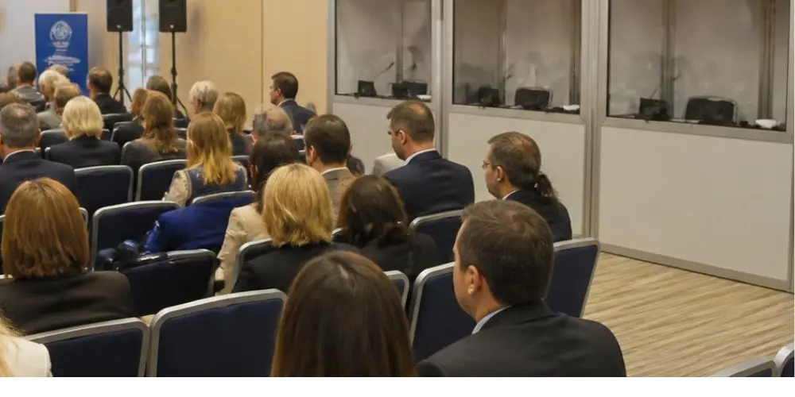

Rosa Sala
CEO de Nubart
Que faire lorsque les interprètes ne peuvent pas rejoindre votre événement

Trouver un interprète simultané est difficile. En trouver un pour des combinaisons linguistiques peu courantes relève du défi. En trouver un à la dernière minute est presque impossible. Et puis il y a toujours le risque qu’en raison d’une maladie, d’une grève ou de problèmes de transport, l’interprète n’arrive pas à temps sur place. Voici ce que la traduction en temps réel par IA peut faire lorsque l’interprétation humaine fait défaut — et pourquoi tous les systèmes d’IA ne sont pas également adaptés comme solution de secours.
La pénurie d’interprètes n’est pas un cas isolé
Toute personne ayant déjà organisé une conférence multilingue sait qu’il n’est pas simple de trouver des interprètes simultanés, surtout pour des combinaisons linguistiques moins fréquentes. Ce sont des professionnels hautement spécialisés dont les agendas sont souvent complets plusieurs mois à l’avance. Pour des paires de langues rares comme japonais-finnois ou arabe-polonais, le nombre d’interprètes qualifiés et disponibles est réellement limité.
La demande d’événements multilingues continue d’augmenter, portée par la mondialisation et les formats hybrides qui facilitent la participation d’intervenants et de publics internationaux. De nombreux organisateurs signalent des difficultés croissantes à trouver des interprètes, en particulier pour les combinaisons linguistiques rares, et sur certains marchés l’offre peine à suivre la demande. Résultat : organiser l’interprétation d’un événement devient un exercice logistique qui commence des mois avant la date prévue et qui reste malgré tout risqué.
Les combinaisons linguistiques rares sont presque toujours gérées au moyen d’une technique appelée interprétation relais (ou relais) : les interprètes d'une première cabine traduisent du finnois vers l’anglais, puis ceux de la seconde cabine reprennent ce flux. Comme les interprètes simultanés travaillent toujours en binôme et se relaient toutes les 15 à 30 minutes afin de gérer la charge cognitive, un dispositif relais implique de coordonner non pas deux personnes, mais deux équipes complètes. Il s’agit d’une pratique professionnelle standard, mais qui augmente considérablement le risque : une seule annulation dans l’une des deux cabines peut rompre toute la chaîne.
Le risque lié aux déplacements a lui aussi évolué ces dernières années. De nombreux interprètes simultanés travaillent désormais à distance, depuis leur domicile ou leur studio, en envoyant directement leur interprétation dans le système audio de l’événement. Ce modèle de Remote Simultaneous Interpretation (RSI) supprime les contraintes liées aux vols et à l’hébergement. Mais il introduit un autre type de fragilité : une panne internet locale chez l’interprète, un routeur défectueux ou une coupure de courant peuvent interrompre le flux aussi efficacement qu’une correspondance ratée à l’aéroport.
Quand les choses tournent mal : le véritable risque pour votre événement
Une grève dans un aéroport. Une mousson. Un accident. Une maladie soudaine la veille au soir… Ou simplement un interprète qui se perd dans les couloirs de l’ONU. Ce ne sont pas des scénarios exotiques. Cela arrive. Et lorsque cela se produit, l’organisateur se retrouve face à une situation à laquelle aucune préparation ne prépare totalement : un événement qui commence dans quelques heures, un public qui attend un accès multilingue… et aucun interprète disponible.
Un cas récent au Japon illustre bien le problème : un organisateur avait déjà réservé des interprètes humains pour une grande conférence, mais il s’inquiétait de ce qui se passerait si leur voyage était perturbé. Il a alors commencé à envisager un système de traduction par IA comme solution de secours, à activer uniquement si les interprètes ne pouvaient pas arriver à temps. Lorsqu’il a demandé un devis à un fournisseur d’interprétation par IA, on lui a expliqué que le service nécessitait l’envoi de personnel sur place pour l’installation. Le coût et la complexité de cette seule étape rendaient déjà la solution peu réaliste comme dispositif de secours. En pratique, il aurait dû payer le prix complet d’un service principal simplement pour disposer d’un filet de sécurité qu’il espérait ne jamais devoir utiliser.
Une assurance ne peut pas coûter aussi cher que ce qu’elle est censée protéger.
L’interprétation par IA peut-elle réellement servir de solution de secours ?
Oui. L’interprétation simultanée par IA a énormément progressé ces dernières années. La qualité n’est pas identique à celle d’un interprète humain expérimenté travaillant dans son domaine de spécialisation, mais elle est professionnelle, en temps réel et, dans de nombreux cas, largement suffisante pour permettre à un public multilingue de suivre l’événement au lieu de rester sans compréhension linguistique. C’est exactement ce qu’une solution de secours doit permettre.
Il est important de vérifier un point dès le départ : toutes les langues ne sont pas encore disponibles pour l’interprétation simultanée par IA. Nubart TRANSLATE prend actuellement en charge 33 langues, et cette liste continue de s’allonger à mesure que la technologie progresse. Si votre événement inclut une langue minoritaire, il est préférable de confirmer sa disponibilité avant de compter sur l’IA comme plan de contingence.
Si vous avez le temps de partager des documents contextuels avant l’événement — programme, notes des intervenants, documentation technique — l’IA pourra mieux s’adapter au vocabulaire spécifique de votre événement. Mais cela fait la différence entre un bon résultat et un très bon résultat, pas entre un système fonctionnel ou non. S’il s’agit simplement de disposer d’un plan B, vous pouvez l’activer tel quel et le rendre opérationnel immédiatement.
Le problème de l’onboarding : pourquoi la plupart des outils d’IA ne sont pas conçus pour cela
De nombreux produits de ce secteur présentent une limite importante lorsqu’il s’agit de les utiliser comme simple solution de repli.
Plusieurs acteurs bien établis du marché ont construit leurs produits autour d’un modèle de services gérés. Ils attribuent un chef de projet à chaque événement. Ils mobilisent des techniciens — sur place ou à distance — pour configurer et superviser la session. Ils proposent des programmes d’onboarding comprenant des démonstrations de la plateforme, des tests techniques et des appels de suivi. Pour des congrès de plusieurs jours avec des installations audiovisuelles complexes, cette approche clé en main correspond exactement à ce que beaucoup d’organisateurs recherchent.
Mais cela rend l'utilisation de l'interprétation par IA en tant que solution de secours très difficile à justifier économiquement.
Si réserver un système d’interprétation par IA implique de planifier une session d’onboarding, d’attendre l’attribution d’un chef de projet, de payer des frais de configuration et de prévoir l’intervention d’un technicien à distance une heure avant le début de l’événement, alors ce système cesse d’être une solution de repli réaliste. Vous n’achetez plus un filet de sécurité : vous vous engagez en réalité dans un doublement du service principal, avec ses propres délais, ses propres ressources humaines et ses propres coûts.
Certains fournisseurs ajoutent des frais d’implémentation ou d’onboarding en plus du coût de base du service, tandis que d’autres imposent un abonnement annuel comme condition d’accès, ce qui complique fortement l’utilisation ponctuelle de la plateforme pour un seul événement. Cela peut parfaitement avoir du sens pour le marché auquel ils s’adressent, mais cela reste incompatible avec l’idée d’un système en attente qui ne sera activé qu’en cas de besoin.
Une approche différente : testez aujourd’hui, utilisez ce soir
Nubart TRANSLATE aborde le problème autrement. Aucun matériel spécifique. Aucun technicien sur place. Aucun chef de projet affecté à votre événement. L’intervenant utilise simplement un navigateur sur n’importe quel appareil et se connecte avec ses identifiants. Le public scanne un QR code avec son smartphone. Voilà toute la configuration nécessaire.
L’essai gratuit donne accès au véritable système, et non à un environnement de démonstration. Le QR code et l’accès intervenant utilisés pendant l’essai sont exactement ceux qui seront utilisés si vous passez commande. Vous pouvez imprimer le QR code à l’avance. Il n’y a rien à reconfigurer, rien à réinstaller et aucune nouvelle session à créer. En pratique, cela signifie que la configuration testée pendant l’essai gratuit est exactement celle que vous utiliserez le jour de l’événement : rien de nouveau à apprendre.
La tarification fonctionne au paiement à l'usage (pay-as-you-go), par journée d'événement. Aucun abonnement annuel ni frais de configuration ne sont requis. Une fois le délai d’annulation de 7 jours dépassé, le montant est dû, que le système ait finalement été utilisé ou non pendant l’événement. Cela reflète le fait que le service a déjà été configuré et réservé pour vous, tout en vous permettant de budgétiser votre solution de secours sans mauvaise surprise.
Dans la pratique, la configuration la plus résiliente combine les deux approches : des interprètes humains comme canal principal et l’interprétation par IA comme solution de secours, soit pour des langues supplémentaires, soit en cas de défaillance du canal principal. C’est exactement le scénario qu’avait imaginé l’organisateur japonais : demander un essai, tester la combinaison linguistique, passer commande puis laisser le système prêt en attente. Si les interprètes arrivent sans problème, l’événement se déroule normalement. Dans le cas contraire, le plan B est prêt à être activé sans dépendre de personne d’autre.
Comment bien s’y préparer
Si vous organisez un événement dépendant d’interprètes humains — en particulier pour des combinaisons linguistiques rares ou lorsque les interprètes doivent voyager depuis l’étranger — il existe une manière raisonnable de vous protéger.
Demandez l’essai Nubart TRANSLATE suffisamment à l’avance. Utilisez les 30 minutes gratuites pour tester précisément la combinaison linguistique dont vous avez besoin. Vérifiez que la configuration audio fonctionne dans votre lieu ou avec votre système de microphones. Si le résultat correspond à vos attentes, vous trouverez le bouton de commande directement dans le lien reçu pour l’essai. Passez commande immédiatement et, si vous les avez déjà, partagez également les documents de l’événement : programme, biographies des intervenants, résumés thématiques. Cela permet à l’IA de disposer du contexte nécessaire pour être correctement préparée. Si ces documents ne sont pas encore disponibles, vous pourrez les mettre en ligne à tout moment depuis votre espace client, dans la section « assets » : notre équipe recevra automatiquement une notification et les préparera pour votre événement en moins de 24 heures.
Ensuite, laissez simplement le système prêt. Vous n’en aurez probablement jamais besoin. Mais si cela devient nécessaire, tout sera déjà configuré : le QR code sera déjà imprimé ou prêt à être partagé, et les intervenants sauront déjà comment se connecter. L’activation le jour même ne prendra que quelques minutes.
La pénurie d’interprètes est une contrainte bien réelle. Les perturbations de voyage sont imprévisibles. Intégrer un plan de contingence dans l’organisation de votre événement n’est pas une précaution excessive : c’est une marque de professionnalisme envers votre public international. Dans l’IT et la gestion professionnelle d’événements, ce type de préparation est généralement décrit en termes de redondance ou de failover : garantir qu’un service critique reste disponible lorsqu’un de ses composants tombe en panne. Exactement la même logique peut s’appliquer à l’interprétation.